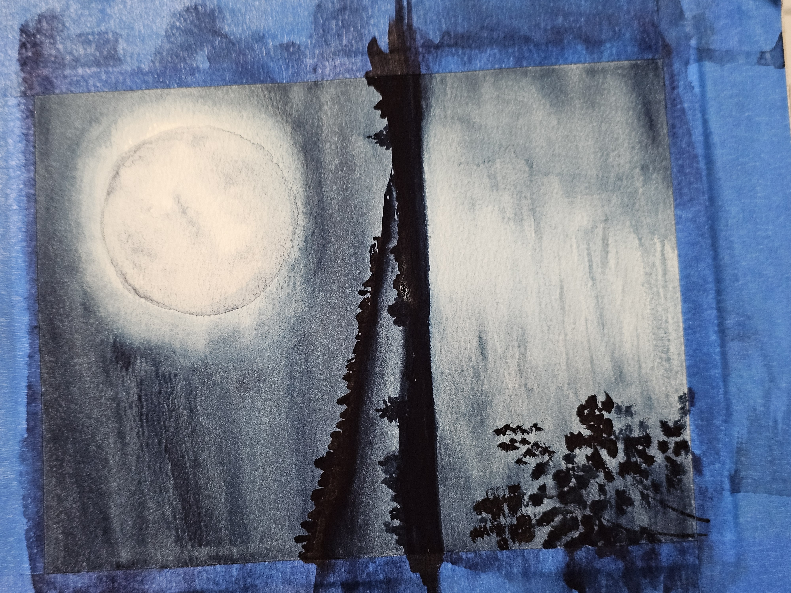
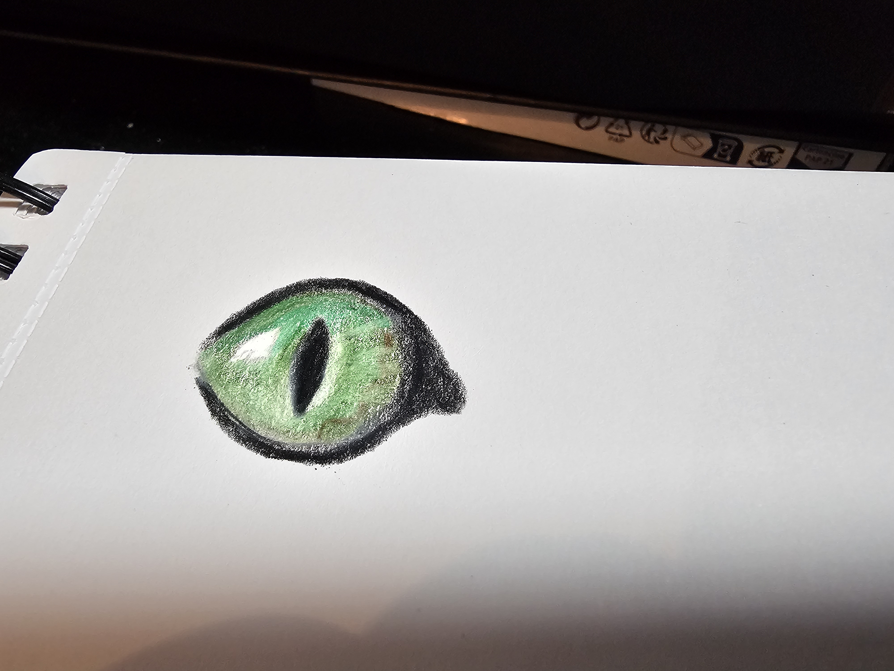

Good ridddance, dumpster fire that was 2024! Hopefully 2025 is going to be a better year.

Writing update
Still working on getting my writing mojo back. Still doing a lot of false-starts with short stories and getting nowhere. However, the Writers Conference is coming up in a few months. Maybe that will help.
I've made a little bit of progress on my big nonfiction project, but not as much as I'd like. I have a little bit of an excuse this month. Not a great excuse, but an excuse nontheless: I lost my office. It was been taken over by roof/attic construction, so I had to move my office and writing space downstairs to the art studio. It's cramped, and my stuff is upstairs in the regular office, so I'm a little hobbled. No, I don't deal with change/adversity well.
As of this week, I was able to move back into my regular office, so now the excuse is gone, lol.
More on the roof issues (aka, "Homeowner Hell") below.
Reading Update
I just finished up Nightbitch, and I have SO MANY mixed feelings.
SPOILERS AHEAD
On the one hand, I love the premise. It's a feminist work on how motherhood is not for everyone and how domesticity can stifle some women, while others thrive.
But it is written with an unreliable narrator. Is this bitch crazy, or is she really turning into a dog? I knew, going in, that it might be a problem for me. I don't mind an unreliable narrator for a while, but I can't accept it for the whole story. Eventually, I need an answer.
And, in most cases, if the whole premise has been a lie, I don't like it. That's part of the reason I have rage about many of Shamalan's works. When I found out that the "monsters" in The Village were just imaginary and created so that the children wouldn't explore and discover there was a world beyond the bounds of the "utopian compound," I just about flipped a damn table.
Don't get me wrong; I love a good twist, a la Twilight Zone, etc., but there's a fine line between a surprise twist and feeling like you've been lied to the whole time. One is a twist; the other a ruse.
Besides that, with this book, every time you feel like celebrating some of her little feral victories, like, "Yas, queen! You be wild and free and to hell with anyone who doesn't get it," something extreme happens in the plot and leaves you, once again, feeling like this bitch is crazy (and maybe her husband and everyone around her, too).
So one minute she's goofing and playing doggie with her kid, and everyone around her is watching and judging her, and you feel like, "No, Boo, you do you. Life is too short! Have fun. Let the haters hate."
And then the next minute, she's brutally killing the family cat.
So, I decided to watch the movie for more understanding. And it made things much worse. More on the movie in the next section.
So now I've moved on to Louise Erdrich's The Nightwatchman. It's an in-between book, as I'm considering joining some bookclubs, but I don't want to read and finish books too far ahead of the bookclub meetings. One book club meets at the end of February to discuss The Mighty Red (also by Erdrich), and one meets in March to discuss Watership Down (my favorite book since the fourth grade). I'm really looking forward to both!
What I'm watching this month
I actually watched a few different movies recently!
We watched Dear Santa with Jack Black. It was cute and fun, and a little silly, of course. I may have a bias since the movie included a scene about a hamster, lol. There just aren't enough hamsters in movies.
The plot is that a little boy with dyslexia (and bad luck) writes a letter to santa...only he gets the letters reversed, and Jack Black (Satan) shows up instead.
As the movie develops, you realize there is a little more to the plot than just the misunderstanding caused by the boy's dyslexia. This keeps the movie from being total silly fart jokes and such. This elevates it above the level of say, an Adam Sandler or Ben Stiller movie, and gives it a more heart.
We also watched Mother of the Bride, a rom-com starring Brooke Shields and Benjamin Bratt. The premise is that they were engaged in high school (college? can't remember) and had a bad break-up without closure. Then years later, they run into each other at the destination wedding...of their children. Her ex's son is marrying her daughter.
It's cute and funny and a feel good comedy about never being too old for love.
The other movie I watched was the complete, freaking opposite: Nightbitch.
Before I read it, I considered the book to be maybe literary or mainstream. After reading it, I was left perplexed how to classify it. Some of the graphic violence in the book almost elevates it to horror.
The movie, however, actually tones a lot of that down. There's one scene that dances at the edge of body horror...and makes no sense at all. It's almost like it was added for gross-out purposes.
SPOILERS AHEAD
In the book, she mentions she is growing a tail. In the movie, she discovers a giant lump where a tail would be. So she grabs a needle so big it looks like a knitting needle (but it's in the bathroom; what the hell was that needle even for???). She jabs it into the lump, and suddenly we are watching something that Dr. Pimple Popper would be proud of.
Then, as this stuff oozes down her butt crack and into her pants (and I'm gagging), she pokes her finger into the hole, dislodging more goo, and pulls out a wad of hair.
"Oh!" I think. "This is where she finds her tail. That's just some loose fur she's grabbed, and her tail is going to pop out any second."
Nope.
She pulls and pulls until she's pulled out a foot-long string of wadded hair, like something you'd pull out of the shower drain. That's it. She just had a shower-drain's worth of hair trapped under her skin. She gives a satisfied smirk, and end scene.
The movie did nothing to resolve the questions of the book, and even made more of its own. For example, in the book, she kept talking about how she would turn into a dog. In the book, you could wonder if the transformatons were real or just her delusions.
In the movie, that's harder to pull of because it's visual...either the character is a dog or she isn't.
However...
It is established early on in the movie, and repeated throughout, that what is happening might not be real. It's a technique used in other movies, and used A LOT in comedy. A scene starts with a husband giving some ridiculous platitude to his wife. She rears back with her arm and smacks the living shit out of him. Quick cut to black, and then the scene repeats. This time, however, the wife responds by smiling and saying sweetly, "That's good advice. I will try that."
With that as a repeated basis in the movie, you can't be sure if the scenes where you are seeing the woman as a dog are real, or if they are more of the imaginary scenes and the second shot showing the real scene isn't shown.
And then there are plot elements that are completely changed that change the entire tone of the story.
One critical plot point (in my opinion), is the demise of the family cat. In the book, this happens when the main character is totally 100% human. Because she's human, and because her son walks in afterwards, it has certain connotations. Oh my gosh, this woman is crazy. Oh, poor cat, it just wanted love from it's human. Oh, lort. The son is forever scarred from the doggy games because he's untouched by the death of the cat in a human way, and instead responds in a doggie way: "We eat?"
In the movie, the cat is killed by the main character while she is in dog form, outside, playing with other dogs, and the son is nowhere around. That entirely changes the tone. The human "is a dog," the cat walked outside where dogs were, and the boy is a secondary participant in the whole thing later, when he is part of the funeral.
So while I had to sit through a completely gratutious pimple scene, the cat scene is watered down, even though doing so completely changes an integral part of the audiences perception of the main character.
I mean, frustated human brutally kills family cat in the kitchen as it begs for love, versus, human in dog form follows instincts and, while riled up and frolicking with other dogs outdoors, kills cat that comes outside into the doggy zone.
Even with my love of horror, I don't like to see violence against animals in movies, but they could have pulled the original plot off without actually showing violence against an animal. We all knew what was happening in the shower scene in Psycho without actually seeing a knife pierce flesh. So they could have preserved the original plot without actually showing a cruelty scene.
A similar plot change happens with the ending, when the main character has her big art show. In the book, she puts on an art installation that displays her truth and her brutality to the world. It leads to protestations from animal rights groups about 'what happens to those poor real bunnies.' In the movie, it's all skeletons she's spray-painted gold and taxidermy.
So, overall rating? Not a fan. Not of the book, nor the movie.
SoMother of the Bride beats Jack Black, and Nightbitch comes in seventh (out of three).
Classes Update
I cannot even believe I passed my class. The whole semester was SUCH a struggle. I started out hobbled by the fact that I didn't know Python programming. Then, of my own fault, I got behind and had to play catch-up. There was no real textbook for the class, and the professor's teaching style did not mesh with my learning style.
And somehow, I pulled off a B.
The funny (and frustrating) part was that no matter what I did, I didn't test well.
The first test, I was unprepared and scared because I didn't know what it would be like. And I had fallen behind on the materials. So I did terribly.
The second test, I studied my ass off for. And now the "unknown" element was gone and I knew what the format of the tests would be.
And I scored one point lower than the first test. WTF?
For the third test, I was frustrated and worn out. I stayed caught up on the class, and I studied a little, but given that score #2 was worse than score #1, I didn't bother to study as much. I just studied a little.
And test score number 3 was two or three points less than test score number 2.
Sigh. So no matter what I did...keep caught up, fall behind, study my ass off, don't study at all, study a medium amount...I was pretty much getting almost the same score every time. I don't even know how that works!
But I did learn a lot. In particular, I learned I like Java. So now that's what I'm learning through Udemy.
And speaking of Udemy, I completed my HTML Bootcamp and added that to my certificate collection.
I'm still working through the full-stack developer course at Codecademy, slowly but surely.
I'm still learning Spanish through Duolingo, but I've stopped Spanish at Skillshare. The course I had been taking there did verb conjugations very differenly than in Duolingo, so it was really confusing me.
At the university, my class this semester is my internship. I am VERY trepidated. I have no idea how this whole thing is going to work, and how to integrate the whole thing into my job. We will see how it goes!
Website Update
I have been wiffle-waffling about website hosting for a while.
Since I hope to get my writing mojo back at some point, I really wanted to make sure I keep some sort of website going, whether that's Wordpress or HTML.
But, because I like to play with programming and web development, I really need a host where I can have more freedom to design from scratch in HTML, CSS, and eventually Javascript.
So I've been running with two websites, with the intention of eventually dropping Wordpress. It's just too expensive to run with two web hosts. My little Wordpress site isn't too expensive on it's own, but when you add in html hosting ($150 plus), I was paying $250 plus per year. And these days, I just feel so oversubscribed for EVERYTHING! Periodically, I go through "subscription rebellion" phases where I randomly cancel stuff.
And that's where I was with the website. I was going to not renew my Wordpress and just move the whole site over to HTML hosting.
But then...I came up with my big nonfiction project. And my nonfiction project is actually going to require a store, should I ever get it completed. My HTML skills are not to the point where I can create my own store. I would need a site that can provide most of that functionality itself.
So now I had an author site at Wordpress that wasn't being used (as I'm not writing), and an expensive html host that I was paying for just for recreational purposes, and a potential nonficton project that circles back to writing and would require a shopping cart site. So the logical thing is to cancel the HTML site, keep the Wordpress site, AND, if I should get my nonfiction project completed, then upgrade the Wordpress site to include a store.
But, like a big baby, I don't want to do that. The HTML part is the most fun! I don't want to give that up! But the grown-up in me says that paying that much for "just for fun" isn't adulting!
So I settled on a compromise. I've decided that I'm going to try out hosting the HTML part of my site on Github now, and I'm going to cancel the current HTML host. The Wordpress site will remain to keep my author site alive.
However, this means there will be one.more.port. Sigh.
Links to the blog posts will once again have to be rebuilt. As of this post, the site is just forward looking. Meaning, older posts, particularly those accessed through Wordpress, will likely be broken for a while.
As time permits, I will work on fixing the links to 2024 posts first, and then work my way back through years prior (some of which are still broken from the last time I ported my site!). Hopefully, the Github solution works well enough I can just get the html part of the site, including archives, built there for good and not have to port them again!
An art update
I've been continuing on with the watercolor, especially broody landscapes.
But now I've also returned to dabbling in watercolor pencils and colored pencils. This one is colored pencil.
I've been trying to make sure I carve out at least a night or two each week to just work on art. It's relaxing and good for my mental health.
This month's playlist.
The ten songs I'm listening to on repeat.
Homeowner Hell
This post is already way too long, but since I mentioned "Homeowner Hell" and losing my office earlier in the post, I should share the rest of the story.
So several Saturday's ago (at least a month, maybe two), the weather suddenly warmed up over 40 degrees. And as I walked up from doing laundry in the basement, I heard this weird "pit, pat, pit, pat" noise.
I tracked down the noise, and it was water dripping from one of the recessed lights in the kitchen. As I watched, more drips appeared at other spots in my kitchen ceiling.
My heart sank. We just moved into this house six years ago, and had the roof redone five years ago.
I threw towels around to soak up the water. But...I was still hearing a pit-pat-pit-pat noise.
I rushed upstairs and looked at the ceiling in the gym. No leaks. But I could still hear the noise. And then I glanced over at the gym window.
The gym window isn't very good. Every winter, it frosts over terribly. And then it melts and soaks the windowsill as the weather warms up. So to prevent that until we get it replaced (part of homeownership is a long list of projects that you are EVENTUALLY going to get around to, but that you never seem to actually get to), we just put plastic over it every winter before it gets too cold. It solves the problem nicely.
The gym window had turned into an aquarium. Literally. Nearly a foot of water trapped between the plastic and the window itself. I could have dropped my goldfish into it.
Upon investigation, water was coming down through a weephole in the top of the window and getting trapped in in-between the plastic and the window itself. On the plus side, I learned that the window and the seals around the frame are very, VERY good. Good enough to hold water and keep it from leaking into the wall!!!
Anyway, to keep the story from getting too long, there were problems with the roof and attic. We had to have multiple contractors/water mitigators, etc., come through to diagnose the problems. And the only access to the attic is through my office.
Part of the problem was just to leave everything ready for someone to inspect all the time (tools, lights, a ladder, etc.). The second part of the problem was that every time someone looked or went into the attic, they would drag "attic junk" back out with them. So the office was under a constant state of contamination. Blown-in insulation, mouse debris, loads of dead bugs, and, occasionally, feathers! Which may mean bird poo.
None of it good for me to breathe; none of it good for the dogs to eat.
Rather than doing a deep clean every other day, I opted to relocate the office.
The thing I'm really thankful for is that we decided to use the rooms in the house for odd purposes. The dining room is our living room, the living room is a gym...and the master bedroom is my office.
I don't know if I would have been able to deal with a constant parade of workers tromping through my bedroom OR having to choose between doing a daily deep clean or relocating the bedroom!
Anyway, the main problem has been resolved for the winter and I was able to move back into my office. No more leaks anywhere and the water should be resolved. In the spring, we still have to have contractors back out to do some roof work, replace some sheeting, and do some other repairs.
That's it for this month. Until next month, Stay Spooky, my friends!
~~Here be monsters . . . and corgis.~~